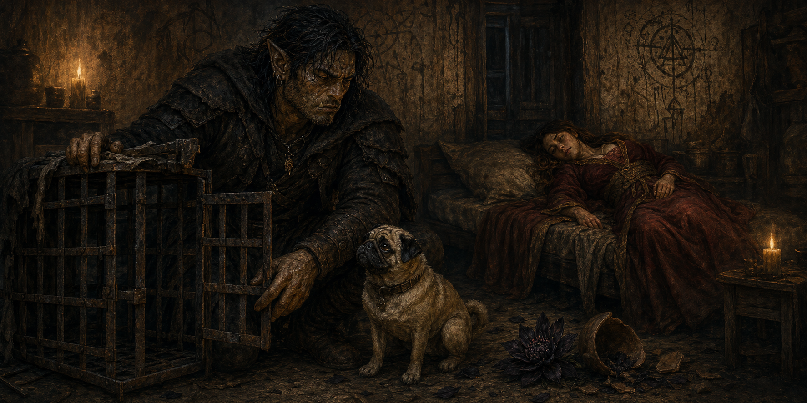

Chapter 3: Lotus Petals
Dark Petals


Dark Petals
15048.11.18
布朗眼前一片模糊混沌。幾秒鐘後，他勉強站穩身體，卻發現自己依然在同一個房間裡，只是打鬥的痕跡全都消失了，梅莉和瑪蒂達也不見蹤影。聽見緊閉的房門外似乎傳來腳步聲，布朗立刻躲進房內的衣櫃，透過門縫窺視。他看見梅莉和瑪蒂達走進房間，百無聊賴地抱怨今天一個客人都沒接到，剛才那兩名兄弟也沒有點她們。從描述來看，她們口中的兄弟似乎正是凱勒布兄弟。
不久後，瑪蒂達暫時離開房間，布朗便抓準時機從衣櫃中跳出，朝梅莉的腳狠狠劃上一刀，同時趕緊用另一隻手摀住她的嘴，不讓她尖叫。在布朗的威脅下，梅莉仍不肯透露瑪芬先生被藏在哪裡，布朗只好再用劍柄往她頭上敲下去。最後，梅莉終於屈服，表示自己會帶布朗回她住的地方，瑪芬先生就被關在那裡。
推開房門時，布朗看見瑪蒂達正朝這裡走來。他威脅梅莉不准耍花樣，否則就殺了她，於是梅莉只好對瑪蒂達說謊，表示布朗要先帶她暫時離開這裡，身上的傷則不用擔心。
離開彩虹叢林後，因為梅莉腳上有傷，兩人回她家的路走得格外漫長，甚至還引來路人的關心。路人建議可以把她送到服從神社請神父照看，但布朗表示自己就能替梅莉簡單治療。
到了梅莉家門口，梅莉掏出鑰匙把門打開。兩人進屋關門後，梅莉立刻倒在門口失去意識。布朗聽見遠處傳來狗叫聲，便先把梅莉扛到床上，接著便在房間角落的鐵籠裡看見了瑪芬先生。布朗發現梅莉的狀況非常差，便先出去買了一些醫療用品，替她做了簡單處理，確認她不至於瀕死後，再把水潑到她臉上。經過一番審問，梅莉表示關著瑪芬先生的鐵籠鑰匙在瑪蒂達手上，但布朗不相信。當他以死亡威脅她時，梅莉便指向門口旁的盆栽，隨後又昏了過去。
布朗走向門邊的盆栽，這才發現這間房子帶給他一種很奇怪的感覺。雖然家具都十分破舊，但擺設看起來像是臨時堆出來的，而且牆上畫滿了文字與符號，充滿拉索斯的氣息。更詭異的是，門口旁盆栽裡種的竟然也是黑蓮花。布朗拿起盆栽，發現盆器表面同樣畫滿拉索斯的符號，而盆栽底下正壓著一把鑰匙。就在布朗捧著盆栽時，他的腦中忽然響起一連串聽不懂的低語。頭痛欲裂的布朗雙手一鬆，盆栽摔到地上，當場碎裂。
布朗決定先把瑪芬先生放出來。見到布朗後，瑪芬先生開心地汪汪叫，接著透過心靈感應告訴布朗這裡很危險，並建議他乾脆把梅莉殺了。布朗感到詫異，因為他還有事情想問梅莉，但瑪芬先生表示，梅莉不過是個小角色，從她身上根本問不出什麼。而且這間房子本來就是梅莉和瑪蒂達一起住的。
到底該聽瑪芬先生的，把梅莉殺掉？還是照自己的原意，等她醒來後再審問？布朗陷入沉思。最後，他決定只警告梅莉，如果她把布朗來過這裡的事情洩漏出去，自己就會回來殺了她。
布朗摘下盆栽裡所有黑蓮花的花瓣後，便帶著瑪芬先生離開。接著，一人一狗來到遊客中心，等待昆妮下班。昆妮下班後，兩人一起前往附近的艾德蒙餐酒館用餐，整晚氣氛愉快，就連瑪芬先生也吃到了他能吃的東西。
吃飽之後，兩人來到恬靜花園散步。昆妮表示，這是自己第一次不是以工作人員的身份走在這裡，感覺很不一樣，同時也很感謝布朗今晚的晚餐與陪伴。
離開花園後，兩人準備前往教堂。保險起見，布朗想先去找凱勒布兄弟。他先到酒館買了一手啤酒，準備去拜訪他們，然而當鋪已經關門。昆妮表示，也許兩兄弟正在酒吧裡，於是布朗便折返回去。果不其然，兩兄弟真的在酒吧內，但湯米已經醉到不省人事，甚至吐了布朗和羅傑一身。在布朗和羅傑合力之下，兩人先把湯米搬到吧台裡，請酒保照顧他。接著，布朗、昆妮、羅傑和瑪芬先生便離開了酒館。布朗先去服飾店換了一套衣服，羅傑也帶大家回他家更衣，之後一行人便準備前往教堂。
在羅傑家門口，布朗看見一個鬼鬼祟祟的可疑身影。仔細一看，那人似乎正是瑪蒂達，布朗就這樣看著她偷偷溜進教堂裡。於是，三人一狗也跟著進了教堂，卻沒有看見瑪蒂達的身影，只看到卡魯神父一人。
布朗和卡魯神父簡單聊了幾句，神父便邀請他走到台前，說要替他祝福。布朗不疑有他，便走了上去。誰知道卡魯神父竟表示，要替他施洗，使他成為拉索斯教徒。就在這時，數名身穿黑色斗篷的人從他身後冒出，牢牢抓住布朗。布朗也從眼角餘光看見，台下的羅傑正神色不善地制住昆妮。下一刻，布朗便失去了意識。
15048.11.18
Brown's vision was blurred and chaotic. A few seconds later he managed to steady himself and realized he was still in the same room, except all signs of the struggle had vanished and Maylee and Matilda were nowhere to be seen. Hearing footsteps outside the shut door, Brown hid in the wardrobe and peered through the crack. He saw Maylee and Matilda enter the room, bored and disappointed as they complained that they had not gotten a single customer that day, and that the two brothers from earlier had not chosen them either. From what they said, the brothers sounded like the Caleb brothers.
Not long after, Matilda stepped out of the room for a moment. Brown seized the chance, sprang from the wardrobe, slashed at Maylee's leg, and immediately clamped a hand over her mouth to stop her from screaming. Even under threat, Maylee refused to tell him where Mr. Muffins was hidden, so Brown struck her in the head with the hilt of his sword. At last she gave in and said she would take him back to her house, where Mr. Muffins was being kept.
When Brown opened the door, he saw Matilda walking toward them. He warned Maylee not to try anything clever or he would kill her, so Maylee lied to Matilda and said Brown was simply taking her away for a while and that her injuries were nothing to worry about.
After leaving Rainbow Jungle, the walk to Maylee's home took far longer than it should have because of her injured leg, and passersby even stopped to ask what had happened. Some suggested taking her to the Shrine of Obedience so the priest could tend to her, but Brown said he could handle it himself.
At Maylee's door, she pulled out a key and unlocked the house. The moment they stepped in and shut the door, she collapsed unconscious by the entrance. Brown heard barking in the distance, so he first carried Maylee to the bed. Then he saw Mr. Muffins locked inside an iron cage in the corner of the room. Brown realized Maylee was in terrible shape, so he went outside to buy medical supplies, treated her just enough to keep her from dying, and splashed water on her face. Under questioning, Maylee claimed the key to Mr. Muffins's cage was with Matilda, but Brown did not believe her. When he threatened to kill her, she pointed weakly toward a flowerpot by the door and then passed out again.
Brown went to the flowerpot and only then realized how strange the house felt. The furniture was shabby, but it looked as though it had all been placed there temporarily. The walls were covered in symbols and writing, and the whole place carried a heavy Laxthos atmosphere. Even stranger, the plant in the pot by the door was another black lotus. Brown picked up the pot and saw Laxthosian symbols painted all over it, and a key hidden underneath. The instant he lifted it, a stream of incomprehensible whispers filled his mind. His head pounding, Brown lost his grip, and the flowerpot shattered on the floor.
Brown decided to free Mr. Muffins first. The pug barked excitedly at the sight of him and then used telepathy to warn Brown that this place was dangerous and that he should just kill Maylee. Brown was startled. He still had things he wanted to ask her, but Mr. Muffins insisted that Maylee was only a minor pawn and knew nothing important. He also explained that the house belonged to both Maylee and Matilda.
Should he listen to Mr. Muffins and kill Maylee, or stick to his own plan and question her properly once she woke up? Brown hesitated. In the end, he chose only to threaten her: if she told anyone he had been there, he would come back and kill her.
After plucking all the petals from the black lotuses in the pot, Brown left with Mr. Muffins. The two then went to the visitor center to wait for Queenie to finish work. Once she did, Brown took her to Edmond's Diner for dinner. The evening was pleasant, and even Mr. Muffins got to enjoy food he could eat.
After the meal, the two of them walked through the Quiet Garden. Queenie said it was the first time she had ever walked there as something other than a staff member, and that the experience felt completely different. She also thanked Brown for the meal and the company.
When they left the garden, they prepared to head for the church. To be safe, Brown wanted to check in with the Caleb brothers first. He bought a case of beer from the tavern and went to visit them, but the pawnshop was already closed. Queenie suggested they might be at the bar, so Brown turned back. Sure enough, the brothers were there, though Tommy was so drunk he could barely stay conscious and even vomited on Brown and Roger. Working together, Brown and Roger dragged Tommy behind the counter and asked the barkeep to look after him. Then Brown, Queenie, Roger, and Mr. Muffins left the tavern. Brown first changed clothes at a clothing shop, and Roger brought everyone back to his home so they could change as well. After that, the group prepared to head for the church.
Outside Roger's house, Brown spotted a suspicious figure sneaking about. Looking closer, he realized it was probably Matilda, and he watched her slip quietly into the church. So the three of them, along with Mr. Muffins, followed her inside, but found no sign of Matilda, only Father Karu.
Brown exchanged a few words with Father Karu, and the priest invited him to step forward to receive a blessing. Brown, suspecting nothing, did so. To his shock, Father Karu announced that he intended to baptize Brown into the faith of Laxthos. At that moment, several figures in black cloaks emerged behind him and seized him tightly. From the corner of his eye, Brown also saw Roger restraining Queenie below the altar with an ugly look on his face. The next moment, Brown lost consciousness.